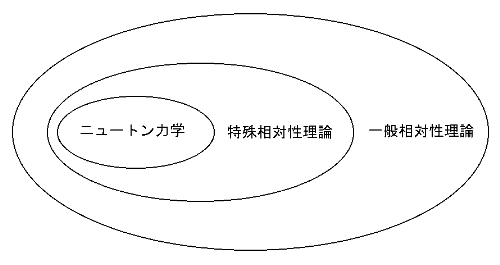
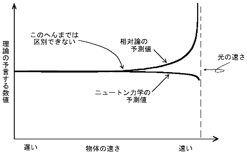
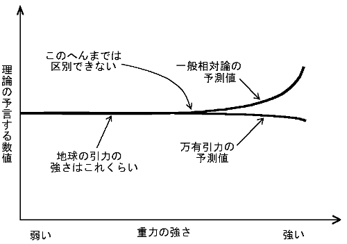

最終更新日 1998年4月23日
相対論といっても実は２つあります。
１つは特殊相対性理論といって、主に標的にされるのがこちらの方です。
もう１つが一般相対性理論で、特殊相対性理論を拡張したものです。
拡張という点から見ると、特殊相対性理論はニュートンの理論
（ニュートン力学）の拡張と言うこともできます。
だから

こういう関係なわけです。
ニュートン力学は特殊相対論に含まれているので、状況によってほとんど同じ
答えを出すこともあります。
それは

こういう関係です。
だから特殊相対論が正しいかどうかを議論する時は、ニュートン力学との
違いが見える高速の（光の速さに近い、例えば秒速１０万キロで飛ぶ
宇宙船とかの）世界について調べなければならないのです。逆に、速く動いてない
日常生活（旅客機でも時速1000キロ、つまり秒速約300メートル）では、
ニュートン力学でも正しい（相対論と同じ結果が得られる）、ってことです。
一般相対論と特殊相対論（＋万有引力）の違いは

こうです。
だから、引力の弱い地球上では、違いはほとんどわかりません。けれど今では、
地上と上空で引力が違うことを利用して、一般相対論と特殊相対論（＋万有引力）の
違いを調べることができます。その結果は、「一般相対論が正しい」です。
だから、多くのアブナイ人が目の敵にしている
特殊相対論は、厳密には正しくないことが証明されています。念のために、
アインシュタインが特殊相対論を発表したのが約９０年前、「より正しい」
一般相対論は約７０年前に、彼自身によって作られています。
さらに現在では、大部分の科学者は一般相対性理論も厳密には正しくない、と
考えています。今のところ、正しい理論は量子論（リョウシロンってなんだ？
というのはまた別の機会に）の形式で書かれるはずだと考えられていますが、
一般相対論はそうなっていません。だから、一般相対論を含むような量子論が
あるに違いない、と思っていろいろ四苦八苦しているのが現状です。